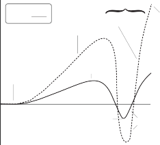
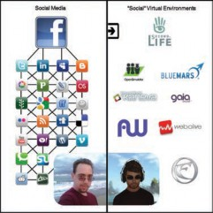

INTRODUCTION TO VIRTUAL WORLDS AND THE METAVERSE
Definition and Significance of Virtual Worlds
Virtual worlds are persistent online computer-generated environments where multiple users in remote physical locations can interact in real time for the purposes of work or play. Virtual worlds constitute a subset of virtual reality applications, a more gen- eral term that refers to computer-generated simulations of three-dimensional objects or environments with seemingly real, direct, or physical user interaction. In 2008, the National Academy of Engineering (NAE) identified virtual reality as one of 14 Grand Challenges awaiting solutions in the 21st Century [National Academy of Engineering 2008]. Although the NAE Grand Challenges Committee has a predominantly Ameri- can perspective, it is informed by constituents with international backgrounds, with a
U.K. member and several U.S.-based members who have close associations with Latin American, African, and Asian institutions (http://www.engineeringchallenges.org/ cms/committee.aspx). In addition, as Zhao [2011] notes, a 2006 report by the Chinese
Author’s addresses: J. D. N. Dionisio, Department of Electrical Engineering & Computer Science, Loyola Marymount University; W. G. Burns III, IEEE Virtual World Standard Group; R. Gilbert, Department of Psychology, Loyola Marymount University; corresponding author’s (Dionisio); email: dondi@lmu.edu.
+
Permission to make digital or hard copies of part or all of this work for personal or classroom use is granted without fee provided that copies are not made or distributed for profit or commercial advantage and that copies show this notice on the first page or initial screen of a display along with the full citation. Copyrights for components of this work owned by others than ACM must be honored. Abstracting with credit is permitted. To copy otherwise, to republish, to post on servers, to redistribute to lists, or to use any component of this work in other works requires prior specific permission and/or a fee. Permissions may be requested from Publications Dept., ACM, Inc., 2 Penn Plaza, Suite 701, New York, NY 10121-0701 USA, fax 1 (212) 869-0481, or permissions@acm.org.
Q
c 2013 ACM 0360-0300/2013/06-ART34 $15.00
34
DOI: http://dx.doi.org/10.1145/2480741.2480751
ACM Computing Surveys, Vol. 45, No. 3, Article 34, Publication date: June 2013.
government entitled Development Plan Outline for Medium and Long-Term Science and Technology Development (2006–2020) (http://www.gov.cn/jrzg/2006-02/09/content_ 183787.htm) and a 2007 Japanese government report labeled Innovation 2025 (http:// www.cao.go.jp/innovation/index.html) both included virtual reality as a priority technology worthy of development. Thus, there is international support for promot- ing advances in virtual reality applications.
Purpose and Scope of this Article
This article surveys the current status of computing as it applies to 3D virtual spaces and outlines what is needed to move from a set of independent virtual worlds to an integrated network of 3D virtual worlds or Metaverse that constitutes a compelling alternative realm for human sociocultural interaction. In presenting this status report and roadmap for advancement, attention will be specifically directed to the following four features that are considered central components of a viable Metaverse.
Realism. Is the virtual space sufficiently realistic to enable users to feel psycholog- ically and emotionally immersed in the alternative realm?
Ubiquity. Are the virtual spaces that comprise the Metaverse accessible through all existing digital devices (from desktops to tablets to mobile devices), and do the user’s virtual identities or collective persona remain intact throughout transitions within the Metaverse?
Interoperability. Do the virtual spaces employ standards such that (a) digital as- sets used in the reconstruction or rendering of virtual environments remain in- terchangeable across specific implementations and (b) users can move seamlessly between locations without interruption in their immersive experience?
Scalability. Does the server architecture deliver sufficient power to enable massive numbers of users to occupy the Metaverse without compromising the efficiency of the system and the experience of the users?
In order to provide context for considering the present state and potential future of 3D virtual spaces, the article begins by presenting the historical development of virtual worlds and conceptions of the Metaverse. This history incorporates literary and gaming precursors to virtual world development as well as direct advances in virtual world technology, because these literary and gaming developments often preceded and significantly influenced later achievements in virtual world technology. Thus, they are most accurately treated as important elements in the technical development of 3D spaces rather than as unrelated cultural events.
THE EVOLUTION OF VIRTUAL WORLDS
Five Phases of Virtual World Development
The development of virtual worlds has a detailed history in which acts of literary imag- ination and gaming innovations have led to advances in open-ended, socially oriented virtual platforms (examples of narratives include those by Au [2008], Boellstorff [2008], and Ludlow and Wallace [2007]). This history can be broadly divided into five phases. In the initial phase, beginning in the late 1970s, text-based virtual worlds emerged in two varieties. MUDs, or multi-user dungeons, involved the creation of fantastic realities that resembled Tolkien’s Lord of the Rings or the role-playing dice game Dungeons and Dragons. MUSHs, or multi-user shared hallucinations, consisted of less-defined exploratory spaces where educators experimented with the possibility of collaborative
creation [Turkle 1995].
The next phase of development occurred around a decade later when Lucasfilm, partly inspired by the 1984 publication of William Gibson’s Neuromancer, introduced
Habitat for the Commodore 64 in 1986 and the Fujitsu platform in 1989. Habitat was the first high-profile commercial application of virtual world technology and the first virtual world to incorporate a graphical interface. This initial graphical interface was in 2D versus 3D, however, and the online environment appeared to the user as something analogous to a primitive cartoon operating at slow speeds via dial-up modems. Habitat was also the first virtual world to employ the term “avatar” (from the Sanskrit meaning “the deliberate appearance or manifestation of a deity on earth”) to describe its digital residents or inhabitants. As with the original Sanskrit, the contemporary usage of the term avatar involves a transposition of consciousness into a new form. However, in contrast to the ancient usage, the modern transition in form involves movement from a human body to a digital representation rather than from a god to a man or woman. Pioneering work in virtual reality systems and user interfaces mark the transition from this phase of development to the next [Blanchard et al. 1990; Cruz-Neira et al. 1992; Lanier 1992; Krueger 1993].
The third phase of development, beginning in the mid-1990s, was a particularly vibrant one with advances in computing power and graphics underlying progress in several major areas, including the introduction of user-created content, 3D graphics, open-ended socialization, and integrated audio. In 1994, Web World offered a 2.5D (iso- metric) world that provided users with open-ended building capability for the first time. The incorporation of user-based content-creation tools ushered in a paradigm shift from precreated virtual settings to online environments that were contributed to, changed, and built by participants in real time. In 1995, Worlds, Inc. (http://www.worlds.com) became the first publicly available virtual world with full three-dimensional graphics. Worlds, Inc. also revived the open-ended non-game-based genre (originally found in text-based MUSHs) by enabling users to socialize in 3D spaces, thus moving virtual worlds further away from a gaming model toward an emphasis on providing an alter- native setting or culture to express the full range and complexity of human behavior. In this way, the scope and diversity of activities in virtual worlds came to parallel that of the Internet as a whole, only in 3D and with corresponding modes of interaction. 1995 also saw the introduction of Activeworlds (http://www.activeworlds.com), a virtual world based entirely on the vision expressed in Neil Stephenson’s 1992 novel Snow Crash. Activeworlds explicitly expected users to personalize and co-construct a full 3D virtual environment. Finally, in 1996, OnLive! Traveler became the first publicly available 3D virtual environment to include natively utilized spatial voice chat and movement of avatar lips via processing phonemes.
The fourth phase of development occurred during the postmillennial decade. This period was characterized by dramatic expansion in the user base of commercial vir- tual worlds (such as Second Life), enhanced in-world content creation tools, increased involvement of major institutions from the physical world (e.g., corporations, col- leges and universities, and nonprofit organizations), the development of an advanced virtual economy, and gradual improvements in graphical fidelity. Avatar Reality’s Blue Mars, released in 2009, involved the most ambitious attempt to incorporate a much higher level of graphical realism into virtual worlds by using the then state-of- the-art CryEngine 2, which was originally developed by Crytek for gaming applications. Avatar Reality also allowed 3D objects to be created out-of-world as long as they could be saved in one of several open formats. Unfortunately, the effort to achieve greater graphical realism significantly raised the system requirements for client machines to a degree that was not cost-effective for Blue Mars’s target user base, and this overreach- ing necessitated massive restructuring/scaling down of a once-promising initiative.
Overlapping the introduction of Second Life and Blue Mars has been a fifth phase of development. This phase, which began in 2007 and remains ongoing, involves open- source decentralized contributions to the development of 3D virtual worlds. Solipsis
Table I. Major Literary/Narrative Influences to Virtual World Technology
YEAR(S)
LITERARY/NARRATIVE
SIGNIFICANCE
1955/1966
Lord of the Rings
Tolkien’s foundational work of 20th-century fantasy literature serves as a source of inspiration for many games and virtual world environments.
1974
Dungeons and Dragons
Originally designed by Gary Gygax and Dave Arneson. Widely regarded as the beginning of modern role-playing games.
1981
True Names
Vernor Vinge’s science fiction novella presents a fully fleshed-out version of cyberspace. Influences later classics such as Neuromancer and Snow Crash.
1984
Neuromancer
William Gibson’s seminal cyberpunk novel popularized the early concept of cyberspace as “the Matrix.”
1992
Snow Crash
The term Metaverse was coined in Neal Stephenson’s science fiction novel to describe a virtual reality-based successor to the Internet.
is notable not only as one of the first open-source virtual world systems but also for its proposed peer-to-peer architecture [Keller and Simon 2002; Frey et al. 2008]. It has since been followed by a host of other open-source projects, including Open Cobalt [Open Cobalt Project 2011], Open Wonderland [Open Wonderland Foundation 2011], and OpenSimulator [OpenSimulator Project 2011].
Decentralized development has led to the decoupling of the client and server sides of a virtual world system, facilitated by convergence on the network protocol used by Linden Lab for Second Life as a de facto standard. The open-source Imprudence/Kokua viewer marked the first “third-party viewer” for Second Life [Antonelli (AV) and Maxsted (AV) 2011],1 an application category that grew to include projects such as Phoenix (and later Firestorm) [Lyon (AV) 2011], Singularity [Gearz (AV) 2011], Kirstens [Cinquetti (AV) 2011], and Nirans (itself derived from Kirstens) [Dean (AV) 2011]. On the server side, the aforementioned OpenSimulator has emerged as a Second Life workalike and al- ternative and has itself spawned forks, such as Aurora-Sim [Aurora-Sim Project 2011] and realXtend [realXtend Association 2011]. The Second Life protocol itself remains proprietary under the full control of Linden Lab.
The emergent multiplicity of interoperable clients (viewers) and servers forms the basis of our fifth phase’s ultimate endpoint: full interoperability and interchangeability across virtual world servers and clients, in the same way that the Worldwide Web consists of multiple client (browser) and server options centered around the standard HTTP(S) protocol. Open source availability has facilitated new integration possibilities, such as cloud-computing virtual world hosts and authentication using social network credentials [Trattner et al. 2010; Korolov 2011]. With activities such as these and continuing work on viewers and servers, it can be said that we have entered an open development phase for virtual worlds. Per Eric S. Raymond’s well-known metaphor, the virtual worlds cathedral has evolved into a virtual worlds bazaar [Raymond 2001]. Tables I to III summarize the major literary/narrative influences to virtual world development and the advances in virtual world technology that have occurred during
the 30-plus years since MUDs and MUSHs were introduced.

1When individuals use an avatar name as opposed to their physical-world name for a paper or software product, we have added a parenthetical (AV), for avatar, after that name to signify this choice. This conforms to the real-world convention of citing an author’s chosen pseudonym (e.g., Mark Twain) rather than his or her given name (e.g., Samuel Clemens). Any author name that is not followed by an (AV) references the author’s physical-world name.
Table II. Major 20th-Century Advances in Virtual World Technology
Phase I: Text-Based Virtual Worlds—Late 1970s YEARS EVENT/MILESTONE SIGNIFICANCE
1979
MUDs and MUSHes
Roy Trubshaw and Richard Bartle complete the first
multi-user dungeon or multi-user domain—a multiplayer,
real-time, virtual gaming world described primarily in text.
MUSHes, text-based online environments in which multiple
users are connected at the same time for open-ended
socialization and collaborative work, also appear at this
time.
Phase II: Graphical Interface and Commercial Application—1980s
1986/1989 Habitat for Commodore
64 (1986) and Fujitsu
platform (1989)
early 1990s Reality Built For Two,
CAVE, Artificial Reality
Partly inspired by William Gibson’s Neuromancer. The first commercial simulated multi-user environment using 2D graphical representations and employing the term “avatar,” borrowed from the Sanskrit term meaning the deliberate appearance or manifestation of a deity in human form.
Prototype virtual reality systems and immersive environments begin to proliferate.
Phase III: User-Created Content, 3D Graphics, Open-Ended Socialization, Integrated Audio—1990s
1994
Web World
The first 2.5D (isometric) world where tens of thousands could chat, build, and travel. Initiated a paradigm shift from precreated environments to environments contributed to, changed, and built by participants in real time.
1995
Worlds Inc.
One of the first publicly available 3D virtual user environments. Enhanced the open-ended non-game-based genre by enabling users to socialize in 3D spaces. Continued moving virtual worlds away from a gaming model toward an emphasis on providing an alternative setting or culture to express the full range and complexity of human behavior.
1995
Activeworlds
Based entirely on Snow Crash, popularized the project of creating an actual Metaverse. Offered basic content-creation tools to personalize and co-construct the virtual environment.
1996
OnLive! Traveler
The first publicly available system that natively utilized spatial voice chat and incorporated the movement of avatar lips via processing phonemes.
Reflecting these developments, Gilbert [2011] has identified five essential features that characterize a contemporary state-of-the art virtual world.
It has a 3D graphical interface and integrated audio. An environment with a text interface alone does not constitute an advanced virtual world.
It supports massively multi-user remote interactivity. Simultaneous interactivity among large numbers of users in remote physical locations is a minimum require- ment, not an advanced feature.
It is persistent. The virtual environment continues to operate even when a partic- ular user is not connected.
It is immersive. The environment’s level of spatial, environmental, and multisen- sory realism creates a sense of psychological presence. Users have a sense of “being inside,” “inhabiting,” or “residing within” the digital environment rather than being outside of it, thus intensifying their psychological experience.
Table III. Major 21st-Century Advances in Virtual World Technology
Phase IV: Major Expansion in Commercial Virtual World User Bases, Enhanced Content Creation Tools, Increased Institutional Presence, Development of Robust Virtual Economy, Improvements in Graphical Fidelity—Postmillennial Decade
YEARS EVENT/MILESTONE SIGNIFICANCE
2003–present Second Life Popular open-ended commercial virtual environment with
in-world live editing, (2) ability to import externally created 3D objects into the virtual environment, and
(3) advanced virtual economy. Primary virtual world for corporate and educational institutions.
2009–present Avatar Reality/
Blue Mars
A closed-source foray into much higher graphical realism using 3D graphics engine technology initially developed in the gaming industry.
Phase V: Open Decentralized Development—2007 and Beyond
2007
Solipsis
The first open-source decentralized virtual world system. Open-source development theoretically allowed new server and client variants to be created from the original code base—something that would actually become a reality with systems other than Solipsis.
2008
Imprudence/Kokua
One of the earliest alternative open-source viewers for an existing virtual world server (Second Life). So-called
“third-party viewers” for Second Life have proliferated ever since.
2009
OpenSimulator
First instance of multiple servers following the same virtual world protocol (Second Life), later accompanied by a choice of multiple viewers that use this protocol. Although the Second Life protocol has become a de facto standard, the protocol itself remains proprietary and occasionally requires reverse engineering.
2010 and beyond
Open Development of the Metaverse
Interoperability and interchangeability across servers and clients through standard virtual world protocols, formats, and digital credentials—users and providers can choose among virtual world client and server implementations respectively without worrying about compatibility or authentication, just as today’s Web runs multiple Web servers and browsers with standards, such as OpenID and OAuth.
It emphasizes user-generated activities and goals and provides content creation tools for personalization of the virtual environment and experience. In contrast to immersive games, where goals—such as amassing points, overcoming an enemy, or fulfilling a quest—are built into the program, virtual worlds provide a more open-ended setting where, similar to physical life and culture, users can define and implement their own activities and goals. However, there are some immer- sive games, such as World of Warcraft, that include specific goals for the users but are still psychologically and socially complex. These intricate immersive environ- ments stand at the border of games and virtual worlds.
From Individual Virtual Worlds to the Metaverse
The word Metaverse is a portmanteau of the prefix “meta” (meaning “beyond”) and the suffix “verse” (shorthand for “universe”). Thus it literally means a universe beyond the physical world. More specifically this “universe beyond” refers to a computer-generated world, distinguishing it from metaphysical or spiritual conceptions of domains beyond
the physical realm. In addition, the Metaverse refers to a fully immersive three- dimensional digital environment in contrast to the more inclusive concept of cyberspace that reflects the totality of shared online space across all dimensions of representation. Although the Metaverse always references an immersive three-dimensional digital space, conceptions about its specific nature and organization have changed over time. The general progression has been from viewing the Metaverse as an amplified version of an individual virtual world to conceiving it as a large network of interconnected virtual worlds. Neal Stephenson, who coined the term in his 1992 novel Snow Crash, vividly conveyed the Metaverse as Virtual World perspective. In Stephenson’s concep- tion of the Metaverse, humans-as-avatars interact with intelligent agents and each other in an immersive world that appears as a nighttime metropolis developed along a neon-lit, hundred-meter-wide grand boulevard called the Street, evoking images of an exaggerated Las Vegas strip. The Street runs the entire circumference of a feature- less black planet considerably larger than Earth that has been visited by 120 million users, approximately 15 million of whom occupy the Street at a given time. Users gain access to the Metaverse through computer terminals that project a first-person per- spective virtual reality display onto goggles and pump stereo digital sound into small earphones that drop from the bows of the goggles and plug into the user’s ears. Users have the ability to customize their avatars with the sole restriction of height (to avoid mile-high avatars), to travel by walking or by virtual vehicle, to build structures on acquired parcels of virtual real estate, and to engage in the full range of human social and instrumental activities. Thus, the Metaverse that Stephenson brilliantly imagined is, in both form and operation, essentially an extremely large and heavily populated virtual world that operates, not as a gaming environment with specific parameters and goals, but as an open-ended digital culture that operates in parallel with the physical
domain.
Since Stephenson’s novel appeared, technological advances have enabled real-life implementation of virtual worlds and more complex and expansive conceptions of the Metaverse have developed. In 2007, the Metaverse Roadmap Project [Smart et al. 2007] offered a multifaceted conception of the Metaverse that involved both “simu- lation technologies that create physically persistent virtual spaces such as virtual and mirror worlds” and “technologies that virtually-enhance physical reality such as augmented reality” (i.e., technologies that connect networked information and compu- tational intelligence to physical objects and spaces). Although this effort is notable in its attempt to view the Metaverse in broader terms than an individual virtual world and is itself advancing quite rapidly (but then again what technology isn’t), the in- clusion of augmented reality technologies served to redirect attention from the core qualities of immersion, three-dimensionality, and simulation that are the foundations of virtual world environments. We consider the augmented reality space to be a subset of the Metaverse that constitutes a crossroads between purely virtual environments and purely real or visceral environments. Like any virtual world system, augmented reality constructs also access assets and data from a self-contained or shared world state, overlaying them on a view of the physical world rather than a synthetic one.
In contrast to the Metaverse Roadmap, a 2008 white paper on Solipsis, an open- source architecture for creating large systems of virtual environments using a peer- to-peer topology, provided the first published account of the contemporary Metaverse as Network of Virtual Worlds perspective. The Solipsis white paper defined the con- cept as “a massive infrastructure of inter-linked virtual worlds accessible via a com- mon user interface (browser) and incorporating both 2D and 3D in an Immersive Internet” [Frey et al. 2008]. Frey et al. and the IEEE Virtual World Standard Group (http://www.metaversestandards.org) also offered a clear developmental progression from an individual virtual world to the Metaverse using concepts and terminology
aligned with the organization of the physical universe [Burns 2010; IEEE VW Stan- dard Working Group 2011b]. This progression starts with separate virtual worlds or MetaWorlds (analogous to individual physical planets) with no interworld tran- sit capabilities (e.g., Second Life, Entropia Universe, and the Chinese virtual world of Hipihi). MetaGalaxies (sometimes referred to as hypergrids) then involve multiple virtual worlds clustered together as perceived collectives under a single authority. MetaGalaxies, such as Activeworlds and OpenSim Hypergrid-enabled virtual environ- ments, permit perceived teleportation or space travel. In such environments, users have the perception of leaving one “planet” or perceived contiguous space and arriving at another. The progression of development culminates in a complete Metaverse that involves multiple MetaGalaxies and MetaWorld systems. A standardized protocol and set of abilities would allow users to move between virtual worlds in a seamless manner regardless of the controlling entity for any particular virtual region.
Computational Advances and the Metaverse
Although there are multiple virtual worlds currently in existence and arguably one hy- pergrid or MetaGalaxy in Activeworlds, the Metaverse itself remains a concept awaiting full implementation. As noted in Section 1.2, the creation of a fully realized Metaverse will rest on continued progress with regard to four essential features of virtual world technology: psychological realism, ubiquity of access and identity, interoperability of content and experience across virtual environments, and scalability. In the section to follow, the current status of each of these features will be presented along with develop- ments in each area that could contribute to the attainment of a viable psychologically compelling Metaverse.
In considering this framework for advancing virtual world technology, it is impor- tant to note two qualifications. First, in the interest of clarity of organization and presentation, the four features of the Metaverse will be mainly presented as separate and distinct variables even though overlap exists among these factors (e.g., increased graphical realism will have implications for server requirements and scalability).
Second, it is important to acknowledge the likelihood that rapid changes in computing (as popularized by Moore’s law and Kurzweil’s law of accelerating returns [Moore 1965; Kurzweil 2001]) will impact the currency of some aspects of this survey. Thus, examples will be cited from time to time for illustrative purposes with full knowledge that the time it takes to prepare, review, and disseminate this document will render some of these examples outdated or obsolete. Nevertheless, although many specifics that make up the virtual realm are subject to rapid change, the general principles and computing issues related to the formation of a fully operational Metaverse that are the primary focus of the present work will continue to be relevant over time [Lanier and Biocca 1992; National Academy of Engineering 2008; Zhao 2011].
FEATURES OF THE METAVERSE: CURRENT STATUS AND FUTURE POSSIBILITIES
Realism
We immediately qualify our use of the term realism to mean, in this context, immersive realism. In the same way that realism in cinematic computer-generated imagery is qualified by its believability rather than devotion to detail (though certainly a sufficient degree of detail is expected), realism in the Metaverse is sought in the service of a user’s psychological and emotional engagement within the environment. A virtual environment is perceived as more realistic based on the degree to which it transports a user into that environment and on the transparency of the boundary between the user’s physical actions and those of his or her avatar. By this token, virtual world realism is not purely additive nor, visually speaking, strictly photographic: in many cases, strategic
rendering choices can yield better returns than merely adding polygons, pixels, objects, or bits in general across the board.
What does remain constant across all perspectives on realism is the instrumentation through which human beings interact with the environment, that is, their senses and their bodies, particularly through their faces and hands. We thus approach realism through this structure of perception and expression.
We treat the subject at a historical and survey level in this article, examining current and future trends. Greater technical detail and focus solely on the (perceived) realism of virtual worlds can be found in the cited work and tutorial materials, such as Glencross et al. [2006].
Sight. Not surprisingly, sight and visuals comprise the sensory channel with the most extensive history within virtual worlds. As described in Section 2, the earliest visual medium for virtual worlds—and for all of computing for that matter—was plain text. Text was used to form imagery within the mind’s eye and, to a certain degree, it remains a very effective mechanism for doing so. In the end, however, words and symbols are indirect: they describe a world and leave specifics to individuals. Effective visual immersion involves eliminating this level of indirection—a virtual world’s visual presentation seeks to be as information-rich to our eyes as the real world is. The brain then recognizes imagery rather than synthesizing or recalling it (as it would when reading text).
To this end, the state of the art in visual immersion has until recently hewn very closely to the state of the art in real-time computer graphics. The precise meaning of real-time visual perception is complicated and fraught with nuances and external factors, such as attention, fixation, and nonvisual cues [Hayhoe et al. 2002; Recanzone 2003; Chow et al. 2006]. For this discussion, “real-time” refers to the simplified metric of frame rate, or the frequency with which a computer graphics system can render a scene. As graphics hardware and algorithms have pushed the threshold of what can be computed and displayed at 30 or more frames per second—a typically accepted minimum frame rate for real-time perception [Kumar et al. 2008; Liu et al. 2010]— virtual world applications have provided increasingly detailed visuals commensurate with the techniques of the time. Thus, alongside games, 3D modeling software, and to a certain extent 3D cinematic animation (qualified as such because the real-time constraint is lifted for the final product), virtual worlds have seen a progression of visual detail from flat polygons to smooth shading and texture mapping and finally to programmable shaders, which can apply transformations and other computations to graphical elements with great efficiency and flexibility.
Initially, visual richness was accomplished simply by increasing the amount of data used to render a scene: more and smaller polygons, higher-resolution textures, and interpolation techniques, such as anti-aliasing and smooth shading. The fixed-function graphics pipeline, so named because it processed 3D models in a uniform manner, fa- cilitated the stabilization of graphics libraries and incremental performance improve- ments in graphics hardware, but it also restricted the options available for delivering detailed objects and realistic rendering [Olano et al. 2004; Olano and Lastra 1998]. This served the area well for a time as hardware improvements accommodated the increasing bandwidth and standards emerged for representing and storing 3D models. Ultimately, however, using increased data for increased detail resulted in diminishing returns, as the cost of developing the information (3D models, 2D textures, animation rigging) can easily surpass the benefit seen in visual realism.
The arrival of programmable shaders allowed key portions of the computer graph- ics rendering pipeline to be written in a specialized language, resulting in unprece- dented flexibility. Shaders and shader languages also deliver great efficiency thanks
to accompanying hardware that is highly optimized and frequently parallelized specif- ically for them. Their eventual establishment as a new functional baseline for 3D libraries, such as OpenGL, represented a significant step for virtual world visuals, as it did for computer graphics applications in general [Rost et al. 2009]. With pro- grammable shaders, many aspects of 3D models—whether in terms of their geometry (vertex shaders) or their final image rendering (fragment shaders)—became expressible algorithmically, thus eliminating the need for larger numbers of polygons or textures while at the same time sharply expanding the variety and flexibility with which ob- jects can be rendered or presented. This degree of flexibility has produced compelling real-time techniques for a variety of object and scene types. The separation of vertex and fragment shaders has also facilitated the augmentation of traditional approaches involving geometry and object models with image-space techniques [Roh and Lee 2005; Shah 2007].
Some of these techniques can see immediate applicability in virtual world environ- ments, as they involve exterior environments, such as terrain, lighting, bodies of water, precipitation, forests, fields, and the atmosphere [Hu et al. 2006; Wang et al. 2006; Bouthors et al. 2008; Boulanger et al. 2009; Seng and Wang 2009; Elek and Kmoch 2010] or common objects, materials, or phenomena, such as clothing, reflected light, smoke, translucence, or gloss [Adabala et al. 2003; Lewinski 2011; Sun and Mukherjee 2006; Ghosh 2007; Shah et al. 2009]. Techniques for specialized applications, such as surgery simulation [Hao et al. 2009] and radioactive threat training [Koepnick et al. 2010], have a place as well, because virtual world environments strive to be as open-ended as possible with minimal restrictions on the types of activities that can be performed within them (just as in the real world).
Most virtual world client applications or viewers currently stand in transition be- tween fixed function rendering (explicit polygon representations, texture maps for small details) and programmable shaders (particle generation, bump mapping, at- mosphere and lighting, water) [Linden Lab 2011a]. Virtual world viewers tend to lag behind other graphics applications such as games, visual effects, or 3D modeling. Real- time lighting and shadows, for instance, were not implemented in the official Second Life viewer until June 2011, long after these had become fairly standard in other graphics application categories [Linden Lab 2011b].
The relative dominance of Second Life as a virtual world platform has resulted in an ecology of viewers that can all connect to the same Second Life environment but do so with varying features and functionalities, some of which pertain to visual detail [Antonelli (AV) and Maxsted (AV) 2011; Gearz (AV) 2011; Lyon (AV) 2011].2 In particular, Kirstens Viewer [Cinquetti (AV) 2011] had, as one of its explicit goals, the extension and integration of graphics techniques, such as realistic shadows, depth of field, and other functionalities, that take better advantage of the flexibility afforded by programmable shaders.
It was stated earlier that visual immersion has hewn very closely to real-time com- puter graphics until recently. This divergence corresponds to the aforementioned type of realism that is demanded by virtual world applications, which is not necessarily detail but more particularly a sense of transference, of transportation into a different environment or perceived reality. It can be stated that the visual fidelity afforded by improved processing power, display hardware, and graphics algorithms (particularly as enabled by programmable shaders) has crossed a certain threshold of sufficiency, such that improving the sense of visual immersion has shifted from pure detail to specific visual elements.
2This multiplicity of viewers for the same information space is analogous to the availability of multiple browser options for the Worldwide Web.
One might consider then that stereoscopic vision may be a key component of visual immersion. This, to a degree, has been borne out by the recent surge in 3D films and particularly exemplified by the success of films with genuine three-dimensional data, such as Avatar and computer-animated work.
A limiting factor of 3D viewing, however, is the need for special glasses in order to fully isolate the imagery seen by the left and right eyes. Although such glasses have become progressively less obtrusive and may eventually become completely unneces- sary, they still represent a hindrance of sorts, and represent a variant of the “come as you are” constraint taken from gesture-based interfaces, which states that ideally user interfaces must minimize the need for attachments or special constraints [Triesch and von der Malsburg 1998; Wachs et al. 2011].
Sound. Like visual realism, the digital replication or generation of sound finds applications well beyond those of virtual worlds and can be argued to have had a greater impact on society as a whole than computer-generated visuals thanks to the CD player, MP3 and its successors, and home theater systems. Unlike visuals which are quite literally “in one’s face” when interacting with current virtual world environments, the role of audio is dual in nature, consisting of distinctly conscious and un- or subconscious sources of sound.
Conscious or front-and-center audio in virtual worlds consists primarily of speech: Speaking and listening are our most natural and facile forms of verbal commu- nication, and the availability of speech is a significant factor in psychologically immersing and engaging ourselves in a virtual world because it engages us di- rectly with other inhabitants of that environment, perhaps more so than reading their (virtual) faces, posture, and movement.
Ambient audio in virtual worlds consists of sound that we may not consciously process but whose presence or absence subtly influences the sense of immersion within that environment. This sense of sound immersion derives directly from the aural environment of the real world: we are at all times enveloped in sound, whether or not we are consciously listening to it. Such sound provides important positional and spatial cues, the perception of which contributes significantly to our sense of placement within a particular situation [Blauert 1996].
For the first conscious form of audio stimulus, we note that high-quality voice chat which reasonably captures the nuances of verbal communication is now generally available [Short et al. 1976; Lober et al. 2007; Wadley et al. 2009]. In this regard, the sense of hearing is somewhat ahead of sight in capturing avatar expression and inter- action. Future avenues in this area include voice masking and modulation technologies that not only capture the user’s spoken expressions but also customize the reproduced vocals seamlessly and effectively [Ueda et al. 2006; Xu et al. 2008; Mecwan et al. 2009]. Ambient audio, however, merits additional discussion. The accurate reproduction of individual sounds serves as a starting point: sound sample quality is limited today solely by storage and bandwidth availability as well as the dynamic range of audio output devices. However, as anyone who has listened to an extremely faithful lossless recording on a single speaker will attest, such one-dimensional accuracy is only the
beginning.
In some respects, the immersiveness of sound can be seen as a broader-based pursuit than immersive visuals, with the ubiquity of sound systems on everything from mobile devices to game consoles to PCs to top-of-the-line studios and theaters. Over the years, stereo has given way to 2.1, 5.1, 7.1 systems and beyond, where the first value indi- cates the number of distinct directional channels and the second represents the num- ber of omnidirectional low-frequency channels. The very buzzword “surround sound”
communicates our desire to be completely enveloped within an audio environment— and we know it when we hear it. We just don’t hear it very often outside of the real world itself.
The correlation of immersiveness to number of directional channels is a straight- forward if ultimately simplistic approximation of how we perceive sound. Sound from the environment reaches our two ears at subtly different levels and frequencies, dif- ferences which the human brain can seamlessly merge and parse into strikingly com- plete positional information [Blauert 1996]. Multichannel sound attempts to replicate these variations by literally projecting different levels of audio from different locations. However, genuine three-dimensional sound perception is more complicated than mere division into channels, as such perception is subject to highly individualized factors, such as the size and shape of the head, the shape of the ears, and years or decades of training and fine-tuning.
The study of binaural sound, as opposed to discrete multichannel reproduction, seeks to record and reproduce sound in a manner that is more faithful to the way we hear in three dimensions. Such precision is modeled as a head-related transfer function (HRTF) that specifies how the ear receives sound from a particular point in space. The HRTF captures the effect of the myriad variables involved in true spatial hearing—acoustic properties of the head, ears, etc.—and determines precisely what must reach the left and right ears of the listener. As a result, binaural audio also requires headphones to have the desired effect, much the same way that stereoscopic vision requires glasses. Both sensory approaches require the precise isolation and coordination of stimuli delivered to the organ involved, so that the intended perceptual computation occurs in the brain.
=
The theory and technology of binaural audio has actually been around for a strikingly long time, with the first such recordings being made as far back as 1881 and occasional milestones and products being developed through the 20th century [Kall Binaural Audio 2010]. Not surprisingly, binaural audio synthesis, thanks to the mathematics of HRTFs, has also been studied and implemented [Brown and Duda 1998; Cobos et al. 2010; Action Reaction Labs 2010]. What is surprising is its lack of application in vir- tual world technology, with no known systems adopting binaural synthesis techniques to create a genuinely spatial sound field for its users. The implementation of binaural audio in virtual worlds thus represents a clear signpost for increased realism (and thus immersiveness) in this area.
Like 3D viewing, binaural audio requires clean isolation of left- and right-side signals in order to be perceived properly, with headphones serving as the aural analog of 3D glasses. Unlike 3D viewing, individual physical differences affect the perceived sound field as well, such that perfect binaural listening cannot really be achieved unless recording conditions (or synthesis parameters) accurately model the listener’s anatomy and environment. Algorithmic tuning within the spatial audio environment in order to allow each listener to specifically match his/her hearing situation would be ideal. Much like we train voice recognition or use an equalizer in audio for best effect to the listener, binaural settings and tuning would allow the listener to adjust to their specific circumstances and gain the most from the experience. It can be argued, however, that the increased spatial fidelity that is achieved even by non-ideal binaural sound would still represent appreciable progress in the audio realism of a virtual world application. Binaural sound synthesis algorithms take as input a prerecorded sound sample, positional information, and one or more HRTFs. Multiplexing these samples may then produce the overall spatial audio environment for a virtual world. However, in much the same way that image textures of static resolution and variety quickly reveal their limitations as tiles and blocks, so does a collection of mixed-and-matched samples
eventually exhibit a degree of repetitiveness, even when presented spatially.
Table IV. Conceptual Equivalents in Visual and Audio Realism
Sight
Sound
Static representation
textures, fixed function
prerecorded samples, discrete channels
Procedural approach
programmable shaders
dynamic sound synthesis
Spatial presentation
stereoscopic vision
binaural audio
Spatial equipment
goggles/glasses
headphones
Avatar expression
face, gesture
voice chat, masking
An additional layer of audio realism can be achieved through synthesis of the actual samples based on the characteristics of the objects generating the sound. Wind blowing through a tunnel will sound different from wind blowing through a field; a footfall should vary based on the footwear and the ground being traversed. Though subtle such audio cues influence our perception of an environment’s realism and thus our sense of immersion within it. When placed in the context of an open-ended virtual world, does this obligate the system to load up a vast library of prerecorded samples? In the same way that modern visuals cannot rely solely on predrawn textures for detail, one can say that the ambient sound environment should also explore the dynamic synthesis of sound effects—a computational foley artist, so to speak [van den Doel et al. 2001].
Work on precisely this type of dynamic sound synthesis, based on factors ranging from rigid body interactions, such as collisions, fractures, scratching, or sliding [O’Brien et al. 2002; Bonneel et al. 2008; Chadwick et al. 2009; Zheng and James 2010], to adjustments based on the rendered texture of an object [Schmidt and Dionisio 2008], exists in the literature. Synthesis of fluid sounds is also of particular interest, as bodies of water and other liquids are sometimes prominent components of a virtual environment [Zheng and James 2009; Moss et al. 2010]. These techniques have not, however, seen much implementation in the virtual world milieu.
Imagine the full effect of a virtual world audio environment where every subtle interaction of avatars and objects produces a reasonably unique and believable sound, which is then rendered, through real-time sound propagation algorithms and binaural synthesis, in a manner that accurately reflects its spatial relationship with the user’s avatar. This research direction for realistic sound within the Metaverse has begun to produce results and constitutes a desirable endpoint for truly immersive audio [Taylor et al. 2009].
Table IV seeks to summarize the realism discussion thus far, highlighting technolo- gies and approaches that are analogous to each other across these senses.
Touch. After sight and sound, the sense of touch gets most of the remaining attention in terms of virtual world realism. It turns out that in virtual worlds the very notion of touch is more open to interpretation than sight and sound.
The classic and perhaps most literal notion of touch in virtual environments is haptic or force feedback. The idea behind haptic feedback is to convert virtual contacts into physical ones. Force feedback is a specific, somewhat simpler form of haptic feedback that pertains specifically to having physical devices push against or resist the user’s body, primarily his or her hands or arms. Tactile feedback has been differentiated from haptic/force feedback as involving only the skin, as opposed to the muscles, joints, and entire body parts [Subramanian et al. 2005].
Haptics are a tale of two technologies: on the one hand, a very simple form of haptic feedback is widely available in game consoles and controllers in the form of vibrations timed to specific events within a game or virtual environment. In addition, user input delivered by movement and gestures, which by nature produces a sort of collateral haptic feedback, has also become fairly common, available in two forms: hand-in-hand with the vibrating controls of the same consoles and systems, and alongside mobile and
ultramobile devices that are equipped with gyroscopes and accelerometers. Microsoft’s Project Natal, which eventually became the Kinect product, took movement interfaces to a new phase with the first mainstream come-as-you-are motion system in which users no longer require a handheld or attached controller in order to convey movement.
Although this form of haptic feedback has become fairly commonplace, in many respects, such sensations remain limited, synthetic, and ultimately not very immer- sive. Feeling vibrations when colliding with objects or firing weapons, for example, constitutes a form of sensory mismatch and is ultimately interpreted as an indirect cue—hardly more realistic than say a system beep or an icon on the screen. Move- ment interfaces, although providing some degree of inertial or muscular sensation, ultimately only go halfway: if a sweeping hand gesture corresponds to a push in the virtual environment, the reaction to the user’s action remains relegated to visual or aural cues, or at most a vibration on a handheld controller.
Thus, targeted haptic feedback—bodily sensations that map more naturally to the virtual environment—remains an area of research and investigation. The work ranges from implementations for specific applications [Harders et al. 2007; Abate et al. 2009] to work that is more integrated with existing platforms, facilitated by open-source devel- opment [de Pascale et al. 2008]. Other work focuses on the haptic devices themselves— that is, the apparatus for delivering force feedback to the user [Folgheraiter et al. 2008; Bullion and Gurocak 2009; Withana et al. 2010]. Finally, the very methodology of cap- turing, modeling, and ultimately reproducing touch-related object properties has been proposed as haptography [Kuchenbecker 2008].
Any discussion of haptic or tactile feedback in virtual worlds would be incomplete without considering touch stimuli of a sexual nature. Sexually-motivated applications have been an open secret of technology adoption, and virtual worlds are no exception [Gilbert et al. 2011b]. So-called teledildonic devices, such as the Sinulator and the Fleshlight, seek to convey tactile feedback to the genital area with the goal of promoting the realism of virtual world sexual encounters [Lynn 2004]. Unfortunately, empirical studies of their effectiveness and overall role in virtual environments, if any, remain unpublished or unavailable.
Less sexual but potentially just as intimate are avatar interactions, such as hugs, cuddles, and tickles. Explorations in this direction have been made as well, in an area termed mediated social touch [Haans and IJsselsteijn 2006]. Such interactions require haptic garments or jackets that provide force or tactile feedback beyond the user’s hands [Tsetserukou 2010; Rahman et al. 2010]. A suite of such devices has even been integrated with Linden Lab’s open-source Second Life viewer to facilitate multimodal, affective, nonverbal communication among avatars in that virtual world [Tsetserukou et al. 2010]. Although such technologies still require additional equipment that may limit widespread adoption and use, they do reflect the aforementioned focus on en- hanced avatar interaction as a particular component of virtual world realism and immersion.
Despite the work in this area, the very presence of a physical device may ultimately dilute users’ sense of immersion (another manifestation of the come-as-you-are prin- ciple). Even with such attachments, no single device can yet convey the full spectrum of force and tactile stimuli that a real-world environment conveys. As a result, some studies have shown that user acceptance of such devices remains somewhat lukewarm or indifferent [Krol et al. 2009]. For networked virtual worlds in particular, technical issues such as latency detract from the effectiveness of haptic feedback [Jay et al. 2007]. The work continues however, as other studies have noted that haptic feedback, once it reaches sufficient fidelity to real-life interactions, does indeed increase one’s feeling of social presence [Sallna¨ s 2010].
The physical constraints of “true” haptic feedback, particularly as imposed by the need for physical attachments to the user, has triggered some interesting alternative paths. Pseudo-haptic feedback seeks to convey the perception of haptics by exploiting connections between visual and haptic stimuli [Le´cuyer 2009]. Further, the responsive- ness of objects to an avatar’s proximity and collisions conveys a sense of involvement and interaction that may stand in for actual haptic or force feedback. Such prox- emic interactions are in fact sufficiently compelling that research in this area is being conducted even for real-world systems [Greenberg et al. 2011]. Interestingly, virtual proxemic interfaces have an advantage of sorts over their real-world counterparts: in a virtual environment, sensing the state of the world is a non-issue, because the envi- ronment itself manages that state. Having such an accurate reading of virtual objects’ and avatars’ locations, velocities, materials, and shapes can facilitate very rich and de- tailed proxemic behavior. Such behavior can in turn promote a sense of touch-related immersion without having to deliver actual force or touch stimuli at all.
Other Senses and Stimuli. Smell and taste, as well as other perceived stimuli such as balance, acceleration, temperature, kinaesthesia, direction, time, and others, have not generally been as well-served by virtual world technologies as sight, sound, and touch. Of these, balance and acceleration have perhaps seen the most attention through motion and flight simulators. Such simulators take “immersion” literally, that is, complete physical enclosure—ultimately not practical for all but the most devout (and wealthy!) of virtual world users.
Gestures and Expressions. It can be argued that the presence of and interactions with fellow human beings, as mediated through virtual world avatars, contributes strongly to the immersive experience that is deemed central to virtual world realism. As such, the more natural and expressive an avatar seems to be, the greater the per- ceived reality of the virtual environment. Traditional rendered detail for avatars has given way to affective cues like poses, incidental sounds, and facial expressions. Such cues range from the subtle, such as blinking, to the integrative, such as displaying mouth movement while audio chat is taking place. Anything that can make the avatar look more “alive” is worth exploring, as the appearance of life (or liveliness) translates to the sense of immersion [Paleari and Lisetti 2006; Martin et al. 2007; Geddes 2010]. Blascovich and Bailenson use the term human social agency to denote this character- istic. The primary variables of such agency have been stratified as movement realism (gestures, expressions, postures, etc.), anthropometric realism (recognizable human body parts), and photographic realism (closeness to actual human appearance), with the first two variables carrying greater weight than the third [Blascovich and Bailenson 2011].
Based on this premise, emerging work on the real-time rendering of human beings is anticipated as the next great sensory surge for virtual worlds. Such work includes increasingly realistic display and animation of the human form, not only of the body itself but of clothes and other attachments [Stoll et al. 2010; Lee et al. 2010]. In this effort, the face may be a particular area of focus—perhaps the new window to the “virtual soul,” at least until the rendering of eyes alone can capture the richness and depth of human emotion [Chun et al. 2007; Jimenez et al. 2010].
Alongside the output of improved visuals, audio, and touch is the requirement for the nonintrusive input of the data that inform such sensory stimuli, particularly with re- spect to avatar interaction and communication. As mentioned, many sensory technolo- gies rely on additional equipment beyond standard computing devices, ranging from the relatively common (headphones) to the rare or inconvenient (haptic garments)— and these are just for sensory output. Input devices are currently even more limited (keyboard, mouse) or somewhat untapped (camera), with only the microphone (in the
audio category) being close to fulfilling the multiple constraints that an input device be highly available and unobtrusive while delivering relative fidelity and integration into a virtual world environment.
Multiple research opportunities thus exist for improving the sensory input that can be used by virtual worlds, especially the kinds of input that enhance interaction among avatars, which, as we have proposed, is a crucial contributor to a system’s immersive- ness and thus realism. On the visual side, capturing the actual facial expression of the user at a given moment [Chandrasiri et al. 2004; Chun et al. 2007; Bradley et al. 2010] serves as an ideal complement to aforementioned facial rendering algorithms [Jimenez et al. 2010] and effectively removes artificial indirection or mediation via keyboard or mouse for facial expressions between real and virtual environments. Some work cov- ers the whole cycle, again indicative of the synergy between capture and presentation [Sung and Kim 2009].
Some input approaches are multimodal, integrating input for one sense with output for another. For example, head tracking, motion detection, or full-body video capture can produce more natural avatar animations [Kawato and Ohya 2000; Newman et al. 2000; Kim et al. 2010] and more immersive or intuitive user interfaces [Francone and Nigay 2011; Rankine et al. 2011]. Such cues can also be synchronized with supporting stimuli, such as sounds (speech, breathing), environmental visuals (depth of field, subjective lighting), and other aspects of the virtual environment [Arangarasan and Phillips Jr. 2002; Latoschik 2005]. Integrating technologies so that the whole becomes greater than the sum of its parts is a theme that is particularly compelling for virtual worlds—a supposition that not only makes intuitive sense but has also seen support from published studies [Biocca et al. 2001; Naumann et al. 2010] and integrative presentations on the subject at conferences, particularly at SIGGRAPH [Fisher et al. 2004; Otaduy et al. 2009].
The need to have multiple devices, wearables, and other equipment for deliver- ing these stimuli diverges from the come-as-you-are principle and poses a barrier to widespread use. This has motivated the pursuit of neural interfaces which seek to de- liver the full suite of stimuli directly to and from the brain [Charles 1999; Gosselin and Sawan 2010; Cozzi et al. 2005]. Although this technology is extremely nascent and pre- liminary, it may represent the best potential combination of high-fidelity, high-detail delivery of sensory stimuli with low device intrusiveness.
The Uncanny Valley Revisited. Our discussion of realism in virtual worlds con- cludes with the uncanny valley, a term coined by Masahiro Mori to denote an apparent discontinuity between the additive likeness of a virtual character or robot to a human being and an actual human being’s reaction to that likeness. As seen in Figure 13, the recognized humanity of a character or robot appears to increase steadily up to a certain point, at which human reactions turn negative or eerie at best, before “full” human like- ness is attained [Mori 1970]. The phenomenon, observable in both computer-generated characters and humanoid physical devices, suggests that recognizing “full humanity” may involve a diverse collection of factors, including sensory subtleties, emotional or empathetic tendencies, diverse behaviors, and perceptual mechanisms for processing faces [Seyama and Nagayama 2007, 2009; Misselhorn 2009; Tinwell et al. 2011].
Although the term is frequently seen in the context of video games, computer ani- mation, and robotics, the uncanny valley takes on a particular significance for virtual world realism, because this form of realism involves psychological immersion, driven primarily by how we perceive and interact with avatars. As we become more proficient

3Based on a translation by Karl F. MacDorman and Takashi Minato, manually rendered and uploaded to Wikimedia Commons [Smurrayinchester (AV) and Voidvector (AV) 2008].

uncanny valley
moving still
bunraku puppet
humanoid robot
stuffed animal
industrial robot
human likeness
50%
corpse
100%
prosthetic hand
zombie
Fig. 1. Masahiro Mori’s uncanny valley. (credit: http://commons.wikimedia.org/wiki/File:Main_ Uncanny_Valley.svg.)
at rendering certain types of realism, we then have to try to understand which compo- nents of that realism have the greatest psychological impact, both individually and in concert with each other (the so-called multimodal approaches mentioned previously). Factors such as static facial detail versus animation, as well as body shape and move- ment have been studied for their ability to convey emotional content or to elicit trust [Hertzmann et al. 2009; McDonnell et al. 2009; McDonnell and Breidt 2010]. Some studies suggest that the uncanny valley response may also vary based on factors be- yond the appearance or behavior of the human facsimile, such as by the gender, age, or even technological sophistication of the human observers [Ho et al. 2008; Tinwell and Grimshaw 2009].
As progress has been made in studying the phenomenon itself, so also has progress been made in crossing or transcending it. The computer graphics advances presented in this section have contributed to this progress in general, with research in facial mod- eling and rendering leading the way in particular. Proprietary algorithms developed by Kevin Walker and commercialized by Image Metrics use computer vision and image analysis of prerecorded video from human performers to generate virtual characters that are recognizably lifelike and can credibly claim to cross the uncanny valley [Im- age Metrics 2011]. The company’s Faceware product has seen effective applications in a variety of computer games and animated films as well as research that specifically targets the uncanny valley phenomenon [Alexander et al. 2009]. These techniques are still best applied to pre-rendered animations, with dynamic real-time synthesis posing an ongoing challenge [Joly 2010]. Alternative approaches include the modeling of real facial muscular anatomy [Marcos et al. 2010] and rendering of the entire human form for applications, such as sports analysis or telepresence [Vignais et al. 2010; Aspin and Roberts 2011].
For virtual world avatars to cross the uncanny valley, the challenge of effective visual rendering is compounded by (1) the need to achieve this rendering fully in real time and
(2) the use of real-time input (e.g., camera-captured facial expressions, synchronized voice chat, appropriate haptic stimuli). In these respects, virtual world environments pose the ultimate uncanny valley challenge, demanding bidirectional real-time capture, processing, and rendering of recognizably lifelike avatars. Such avatars in turn are instrumental in producing the most immersive psychologically compelling experience possible.
Ubiquity
The notion of ubiquity in virtual worlds derives directly from the prime criterion that a fully-realized Metaverse must provide a milieu for human culture and interaction that, as with the physical world, is psychologically compelling for the user. The real world is ubiquitous in a number of ways. First, it is literally ubiquitous—we unavoidably dwell in, move around, and interact with it at all times, in all situations. Second, our presence within the real world is ubiquitously manifest—that is, our identity and persona are, under normal circumstances, universally recognizable, primarily through our physical embodiment (face, body, voice, fingerprints, retina) but augmented by a small universally-applicable set of artifacts, such as our signature, key documents (birth certificates, passports, licenses, etc.), and identifiers (social security numbers, bank accounts, credit cards, etc.). Our identity is further extended by what we produce and consume: books, music, or movies that we like; the food that we cook or eat; and memorabilia that we strongly associate with ourselves or our lives [Turkle 2007].
Although our perception of the real world may sometimes fluctuate—such as when we are asleep—the real world’s literal ubiquity persists regardless of what our senses say (and whether or not we are even alive). Similarly, although our identities may sometimes be doubted, inconclusive, forged, impersonated, or stolen, in the end, these situations are borne of errors, deceptions, and falsehoods: there always remains a real “me” with a core package of artifacts (physical, documentary, etc.) that authoritatively represent “me.”
To serve as a rich alternative venue for human activity and interaction, virtual worlds must support some analog of these two aspects of real-world ubiquity. If a virtual world does not retain some constant presence and availability, then it feels remote and far-removed and, thus, to some degree not as “real” as the physical world. If there are barriers, artificial impedances, or undue inconveniences involved with identifying ourselves and the information that we create or use within or across virtual worlds, this distances our sense of self from these worlds, and we lose a certain degree of investment or immersion within them. We thus divide the remainder of this section between these two aspects of ubiquity: ubiquitous availability and access, and ubiquitous persona and presence.
Availability and Access of Virtual Worlds. Ubiquitous availability of and access to vir- tual worlds can be viewed as a specific instance of ubicomp or ubiquitous computing, as first proposed by Mark Weiser [1991, 1993]. The general definition of ubiquitous computing is the massive pervasive presence of digital devices throughout our real- world surroundings. Ubiquitous computing applications include pervasive information capture, surveillance, interactive rooms, crowdsourcing, augmented reality, biometrics and health monitoring, and any other computer-supported activity that involves multi- ple, autonomous, and sometimes mobile loci of information input, processing, or output [Jeon et al. 2007].
The pervasive device aspect of ubicomp research—embedded systems, audio/video capture, ultramobile devices—can be of great service to the virtual worlds realm, es- pecially in terms of a world’s ubiquitous availability. Physical access to virtual worlds has predominantly been the realm of traditional computing devices: PCs and laptops ideally equipped with headsets, microphones, high-end graphics cards, and broadband connectivity. Visiting virtual worlds involves physically locating oneself at an appropri- ate station, whether it be a fixed desktop or a suitable setting for a laptop. Peripheral concerns, such as connecting a headset, finding a network connection, or ensuring an appropriate aural atmosphere (i.e., no excessive noise) frequently arise, and it is only after one is “settled in” that entry into the virtual environment may satisfactorily take place.
Although other features, such as realism and scalability (Section 3.4), may continue to be best served by traditional desktop and laptop stations, the current near-exclusivity of such devices as portals into virtual worlds hinders the perceived ubiquity of such worlds. When one is traveling away from one’s “usual” system or is in an otherwise “unwired” real-world situation, the inability to access or interact with a virtual world diminishes that world’s capacity to serve as an alternative milieu for cultural, social, and creative interaction—the very measure by which we differentiate virtual worlds from other 3D, networked, graphical, or social computer systems. Ubiquitous comput- ing lays the technological roadmap that leads away from this current desktop and laptop hegemony toward pervasive versatile availability and access to the Metaverse. The latest wave of mobile and tablet devices comprises one aspect of the ubiquitous computing vision that has recently hit mainstream status. Combined with existing alternative access points to virtual worlds, such as email and text-only chat protocols, these devices form the beginnings of ubiquitous virtual world access [Pocket Metaverse 2009]. Going forward, the increasing computational and audiovisual power of such devices may allow them to run viewers that approach current desktop/laptop viewers in fidelity and immersiveness. In addition, the new form factors and user interfaces enabled by such devices, with front-facing cameras, accelerometers, gyroscopes, and multitouch screens, should also facilitate new forms of interaction with virtual worlds beyond the keyboard-mouse-headset combination that is almost universally used today [Baillie et al. 2005; Francone and Nigay 2011]. Such technologies make the ubiquitous availability of virtual worlds more compelling and immersive in a manner that is
different from traditional desktop/laptop interaction.
In parallel, modern Web applications and Web browsers, with their full programma- bility, standardized networking, 3D, and media interfaces, and zero-overhead instal- lation or access mechanisms, comprise a software-side enabler toward virtual world ubiquity. Modern Web architectures and browsers have already facilitated the ubiq- uity of e-Commerce, social networking, and other applications. Virtual worlds can also attain this degree of availability as Web standards, in conjunction with the platforms on which they run, begin to fulfill the requirements of a 3D virtual environment. The potential of such a platform has seen early demonstrations in systems like the Aves engine [Bakaus 2010b; 2010a]. Aves graphics were restricted to isometric 2D, but there is no reason to doubt that full 3D rendering using WebGL will eventually arrive.4
It should be noted that not all browser-based virtual environments are entirely browser-native, requiring third-party plugins to deliver an immersive experience. Such implementations only partially fulfill the ubiquity potential of a browser-based virtual world viewer and may require significant porting or redesign to become browser-based in the true sense of the word.
In the end, the broad permeation of real-world portals into a virtual world, along the lines envisioned by ubiquitous computing, will elevate a virtual world’s ability to be an alternative and equally rich environment to the physical world: a true parallel existence to and from which we can shuttle freely with a minimum of technological or situational hindrances. The current candidate platform for this vision of ubiquitous availability and access is a modern Web application built on open-standard browser- native technologies, such as HTML5, Ajax, and WebGL, which, through its reliance solely on a Web browser without third-party plugins, can then run on the full spectrum of devices with standards-compliant browsers.

4The Aves project was acquired by Zynga and has been brought completely inhouse. However, the prospect of an open or freely available engine of this type remains likely and bright.
Manifest Persona and Presence. As mentioned, in the real world, we have a unified presence, centered on our physical body but otherwise permeating other locations and aspects of life through artifacts or credentials that represent us. Bank accounts, credit cards, memberships in various organizations, and other affiliations carry our manifest persona, the sum total of which contributes to our overall presence in society and the world.
This aggregation of data pertaining to our identity has begun to take place within personal, social, medical, financial, and other information spaces. The strength of this data aggregation varies, ranging from seamless integration (e.g., between two systems that use the same electronic credentials) to total separation within the digital space, only integrated outside via user input or interaction. If current trends continue, these informational fragments of identity should tend toward consolidation and interoper- ability, producing a distributed ubiquitous electronic presence [Gilbert et al. 2011a; Gilbert and Forney 2013]. This form of ubiquity must also be modeled by virtual en- vironments as a condition for their being a sufficient alternative existence to the real world.
As information systems have evolved from passive recorders of transactions, with the types of transactions themselves evolving from financial activity to interpersonal communication, documents, and audiovisual media, and finally to social outlets, the flow of such information has also shifted from separated producers and consumers to so-called prosumers that simultaneously create, view, and modify content.5 A persona in this context is the virtual aggregate of a person’s online presence, in terms of the digital artifacts that he or she creates, views, or modifies.
The prosumer culture has entrenched itself well in blogs, mashups, and audiovisual and social media. Their close association to the individuals that produce and consume this content has provided greater motivation toward consolidation of persona than traditional information wells such as finance and commerce. Common information from social networks can be utilized across systems through published protocols and services resulting in increasing unification and consolidation of one’s individuality [Facebook 2011; Twitter 2011; Yahoo! Inc. 2011; OAuth Community 2011; OpenID Foundation 2011]. This interconnectivity and transfer of persona when and where it is required by the user has yet to see adoption or implementation within virtual worlds. Virtual worlds are currently balkanized information silos with the credentials required being just as disjoint and uncoordinated.
Shared credentials and the bidirectional flow of current information types, such as writings, images, audio, and video, across virtual worlds represent only the initial phases of bringing a ubiquitous unified persona and presence into this domain. The actual content that can be produced/consumed within virtual environments expands as well, now covering 3D models encapsulating interactive and physics-based behaviors as well as machinima presentations delivering self-contained episodes of virtual world activity [Morris et al. 2005]. Where interoperability (covered in the next section) con- cerns itself with the development of sufficiently extensible standards for conveying or transferring such digital assets, ubiquity concerns itself with consistently identifying and associating such assets with the personas that produce or consume them. Virtual worlds must provide this aggregation of virtual artifacts under a unified omnipresent electronic “self ” in order to serve as a viable real-world alternative existence. Digital assets which comprise a virtual self must also be seamlessly available from all points of virtual access, as illustrated in Figure 2.
5The term “prosumer” here combines the terms “producer” and “consumer,” and not “professional consumer,” as the term is used in other domains.

Fig. 2. Interactions (or lack of) among social media networks and virtual environments.
To date, no system facilitates ease of migration for the virtual environment persona across virtual worlds, unlike the interchange protocols in place for social media outlets and a host of other information hosting and sharing services. There are some efforts to create unified standards for virtual environments [IEEE VW Standard Working Group 2011a; COLLADA Community 2011; Arnaud and Barnes 2006; Smart et al. 2007]. At present, these efforts have yet to bear long-term fruit.
In order to truly offer a ubiquitous persona in virtual environments, the individual must be able to seamlessly and transparently cross virtual borders while remaining connected to existing legally-accessible information assets. A solution for this require- ment may involve not only industry consensus but also some technical innovation that can connect these systems and store assets securely for transfer while remaining independent of any single central influence.
Interoperability
In terms of functionality alone, interoperability in the virtual world context is little different from the general notion of interoperability: it is the ability of distinct sys- tems or platforms to exchange information or interact with each other seamlessly and, when possible, transparently. Interoperability also implies some type of consensus or convention which then become standards when formalized.
As specifically applied to virtual worlds, interoperability might be viewed as merely the enabling technology required for ubiquity, as described in the previous section. Although this is not inaccurate, interoperability remains a key feature of virtual worlds in its own right, because it is interoperability that puts the capital M in the Metaverse: just as the singular capitalized Internet is borne of layered standards which allow disparate heterogeneous networks and subnetworks to communicate with each other transparently, so too will a singular capitalized Metaverse only emerge if corresponding standards also allow disparate heterogeneous virtual worlds to seamlessly exchange or transport objects, behaviors, and avatars.
This desired behavior is analogous to travel and transport in the real world. As our bodies move between physical locations, our identity seamlessly transfers from point to point with no interruption of experience. Our possessions can be sent from place to place, and under normal circumstances, they do not substantially change in doing so. Thus, real-world travel has a continuity in which we and our things remain largely
intact in transit. We take this continuity for granted in the real world where it is indeed a matter of course. With virtual worlds, however, this effect ranges from highly disruptive to completely nonexistent.
The importance of having a single Metaverse is connected directly to the long-term endpoint of having virtual worlds offer a milieu for human sociocultural interaction that, like the physical world, is psychologically rich and compelling. Such integra- tion immediately makes all compatible virtual world implementations, regardless of lineage, parts of a greater whole. With interoperability, especially in terms of a transfer- able avatar, users can finally have full access to any environment without the disruption of changing login credentials or losing one’s chain of cross-cutting digital assets.
Existing Standards. The first (relatively) widely-adopted standard relating to vir- tual worlds was VRML (Virtual Reality Modeling Language). Originally envisioned as a 3D-scene analog to the then-recently-emergent HTML document standard, VRML captured an individual 3D space as a single “world” file that can be downloaded and displayed with any VRML-capable browser. VRML, like HTML, utilized URLs to fa- cilitate navigation from one world to another, thus enabling an early form of virtual world interoperability.
VRML has since been succeeded by X3D. X3D expands on the graphics capabilities of VRML while also adjusting its syntax to align it with XML. Both formats reached formal ISO recognition as standards but neither has gained truly mainstream adop- tion. Barriers to this adoption include the lack of a satisfactory widely-available client for effectively displaying this content, competition from proprietary efforts, and most importantly, a lack of critical mass with regard to actual virtual world content and richness. Efforts are currently under way for making X3D a first-class citizen of the HTML5 specification in the same way that other XML dialects, like SVG and MathML, have been integrated. Such inclusion may solve the issue of client availability as Web browser developers would have to support X3D if they are to claim full HTML5 compli- ance, but overcoming the other barriers—especially that of insufficient content—would require additional effort and perhaps some degree of advocacy.
Technologically distinct and more recent than VRML and X3D is COLLADA [COLLADA Community 2011; Arnaud and Barnes 2006]. COLLADA has a different design goal: it is not as much a complete virtual world standard as it is an interchange format. Widespread COLLADA adoption would facilitate easier exchange of objects and behaviors from one virtual world system to another; in fact, COLLADA’s scope is not limited to virtual worlds because it can be used as a general-purpose 3D object interchange mechanism.
On the opposite side of the standards aisle is the de facto standard established by Linden Lab which stems purely from the relative success of Second Life. Unlike X3D and VRML before it, Second Life crossed an adoption threshold that spawned a fairly viable ecology of alternative viewers and servers. Beyond this widespread use, however, Second Life user credentials, protocols, and data formats fall short. They remain proprietary with an array of restrictions on how and where they can be used. For instance, only viewers (clients) have official support from Linden Lab; alternative server implementations, such as OpenSimulator, are actually reverse-engineered and not directly sanctioned.
As with other areas with interoperability concerns, virtual world interoperability is not an entirely technical challenge. Many of its current players actually benefit from a lack of interoperability in the short term and thus understandably resist it or are apathetic to it. Similar to other areas (such as the emergence of the Worldwide Web above proprietary online information services), a potential push toward interoperability requires multilateral contributions and momentum from standards groups, commercial developers, and the open-source community.
Virtual World Interoperability Layers. The promise of virtual world interoperability as envisioned in this article—the kind that facilitates a single Metaverse and not a disjointed partitioned scattering of incompatible environments—is currently a work in progress. Ideally, such a standard would have the rigor and ratification achieved by VRML and X3D while also attaining a critical mass of active users and content. In addition this standard should actually be a family of standards, each concerned with a different layer of virtual world technology.
A model standard should sufficiently capture the properties, geometry, assets, and perhaps behavior of virtual world environments. VRML, X3D, and COLLADA are predominantly model standards. Note that a model standard’s main purpose is to facilitate object interchange across different virtual world systems. The systems themselves may represent objects using a private or proprietary mechanism as long as they seamlessly read from and write to the nonproprietary open standard. Modeling is the most obvious area that needs standardization, but this alone will not facilitate the capital-M Metaverse.
A protocol standard defines the interactive and transactional contract between a virtual world client or viewer and a virtual world server. This layer enables a mix- and-match situation with multiple choices for virtual world clients and servers, none of which would be “wrong” from the perspective of compatibility. As men- tioned, Second Life has established a de facto protocol standard solely through its widespread use. Full standardization, at this writing, does not appear to be part of this protocol’s road map.
Open Cobalt currently represents the most mature effort other than Second Life that can potentially fulfill the role of a virtual world protocol standard [Open Cobalt Project 2011]. As an open-source platform under the flexible MIT free software license, Open Cobalt certainly offers fewer limits or restrictions to widespread adoption. Like VRML and X3D, however, the protocol will need connections to diverse and compelling content in order to gain critical mass.
A locator standard identifies places or landmarks across virtual worlds. Techno- logically, this may be the easiest standard to establish because it already exists: uniform resource locators (URLs), a subset of the uniform resource identifier (URI) standard [Berners-Lee et al. 2005], are completely adaptable for virtual world land- marks and have in fact been used by Linden Lab for Second Life locations (Second Life URLs or SLURLs). The missing piece is universal consensus and adoption of a virtual world URL scheme (VWURLs, so to speak, or MVURLs if the preferred phrase is Metaverse URL) so that, regardless of the virtual world system or viewer, the same scheme can be recognized and used to move easily from virtual place to virtual place.
An identity standard defines a unified set of user credentials and capabilities that can cross virtual world platform boundaries: This would be the virtual world equivalent of efforts such as OpenID and the Facebook Connect [OpenID Founda- tion 2011; Facebook 2011]. The importance of an identity standard was covered in Section 3.2.2.
A currency standard quantifies the value of virtual objects and creations, facili- tating their trade and exchange. Linden Dollars within Second Life represent the dominant virtual world currency, but it can be used only within Second Life and is meaningful only within that system (until exchanged for a real-world currency). Bitcoin is not controlled by any particular authority, with a number of mechanisms in place for tracking or validating its transactions while retaining a peer-to-peer nature [Nakamoto 2009; Piotrowski and Terzis 2011]. A standard such as this may form the basis for interoperable Metaverse currency.
As with Internet standards, this layering is defined only to separate the distinct virtual world concerns, to help focus on each area’s particular challenges and require- ments. Ultimately, standards at every layer will need to emerge, with the combined set forming an overall framework around which virtual worlds can connect and coa- lesce into a single unified Metaverse capable of growing and evolving in a parallel, decentralized, and organic manner.
Scalability
As with the features discussed in the previous sections, virtual worlds have scalability concerns that are similar to those that exist with other systems and technologies, while also having some distinct and unique issues from the virtual world perspective. Based on this article’s prime criterion that a fully-realized Metaverse must provide a milieu for human culture and interaction, scalability may thus be the most challenging virtual world feature of all, as the physical world is of enormous and potentially infinite scale on many levels and dimensions. Three dimensions of virtual world scalability have been identified in the literature [Liu et al. 2010].
Concurrent Users/Avatars: The number of users interacting with each other at a given moment.
Scene Complexity: The number of objects in a particular locality and their level of detail or complexity in terms of both behavior and appearance.
User/Avatar Interaction: The type, scope, and range of interactions that are possi- ble among concurrent users (e.g., intimate conversations within a small space vs. large-area crowd-scale activities such as “the wave”).
In many respects, the virtual world scalability problem parallels the computer graph- ics rendering problem: what we see in the real world is the constantly updating result of multitudes of interactions among photons and materials governed by the laws of physics—something that computers can only approximate and never absolutely repli- cate. Virtual worlds add further dimensions to these interactions, with the human social factor playing a key role (as previously expressed in the first and third dimen- sions). Thus it is no surprise that most of the scientific problems listed by Zhao [2011] focus on theoretical limits to virtual world modeling and computation; because in the end, what else is a virtual world but an attempt to simulate the real world in its entirety, from its physical makeup all the way to the activities of its inhabitants?
Traditional Centralized Architectures. Historically, virtual world architectures can be viewed as the progeny of graphics-intensive 3D games and simulations, and thus they share the strengths and weaknesses of both [Waldo 2008]. Graphics-intensive 3D games focus on scene complexity and detail, particularly in terms of object rendering or appearance, and strongly emphasize real-time performance. Simulations focus on in- teractions among numerous elements (or actors) with a focus on repeatability, accuracy, and precision.
Both 3D games and simulations, along with many other application categories at the time, were predominantly single-threaded and centralized when the first virtual world systems emerged. Processing followed a single serialized computational path, with some central entity serving as the locus of such computations, the authoritative repository of system state, or both. Virtual world implementations were no exception; as 3D-game-and-simulation hybrids, however, they consisted of two centers: clients or viewers that rendered the virtual world for its users and received the actions of its avatars (derived from 3D games) and servers that tracked the shared virtual world state, changing it as avatar and scripted directives were received from the clients connected to them (derived from simulations).
This initial paradigm was in many respects unavoidable and quite natural, because it was the reigning approach for most applications at the time, including the 3D game and simulation technologies that converged to form the first virtual world systems. However, this initial paradigm also established a form of technological inertia, with succeeding virtual world iterations remaining conceptually centralized despite early evidence that such an architecture ultimately does not scale along any one of the aforementioned dimensions (concurrent avatars, scene complexity, avatar interactions) much less all three [Lanier 2010; Morningstar and Farmer 1991]. This “technology lock-in” resulted in successive attempts at virtual world scalability that addressed the symptoms of the problem and not its ultimate cause [Lanier 2010].
Initial Distribution Strategies: Regions and Shards (Distribution by Geography). The role of clients/viewers as renderers of an individual user’s view of the virtual world was perhaps the most obvious initial boundary across which computational load can be clearly distributed: the same geometric, visual, and environmental information can be used by multiple clients to compute differing views of the same world in parallel. Outside of this separation, the maintenance and coordination of this geometric, visual, and environmental data—the shared state of the virtual world—then became the initial focus of scalability work.
Initial approaches to distributing the maintenance of shared state fall within two broad categories: regions and shards. Both distribution strategies are based on the virtual world’s geography. In the region approach, the total expanse of a virtual world is divided into contiguous, frequently uniform chunks, with each chunk being given to a distinct computational unit or sim. This division is motivated by an assumption that activities which affect each other are most likely to take place within a relatively small area (i.e., spatial locality). Spatial locality implies that an individual avatar is primarily concerned with or affected by activities within a finite radius of that avatar. The scaling rationale thus sees the growth of a virtual world as the accretion of new regions, reflected by an increase in active sims. Individual avatars are then serviced by only one computational unit or host at a time because events of concern are thought to be restricted to within a small radius of that avatar.
The shard approach is also based on a virtual world’s geography, with portions of that geography being replicated rather than partitioned across multiple hosts or servers. Shards prioritize concurrent users over a single world state. Because parts of the virtual world are effectively copied across multiple servers, more users can seem to be located in a given area at a given time. Trade-offs for this concurrency include not being able to interact with every user in the same area (because users are separated over multiple servers). Most severely, as mentioned, the virtual world loses its single shared state. Thus shards are applicable primarily to transient virtual environments, such as massively multiplayer online games, and not to general virtual worlds that must maintain a single, persistent, and consistent state.
The region approach has been the de facto distribution strategy for many virtual world systems, including Second Life [Wilkes 2008]. However, as pointed out by Ian Wilkes and borne out by subsequent empirical studies [Gupta et al. 2009; Liu et al. 2010], partitioning by region fails on key virtual world use cases.
Number of concurrent users in a single region. Even the most powerful sims sat- urate at around 100 concurrent users (and thus a potential of 4,950 concurrent user-to-user interactions, not to mention interactions with objects).
Varying complexity and detail in regions. The spatial basis for regions does not take into account the possibility that one region may be relatively barren and inactive while another may include tens of thousands of objects with multiple concurrent users.
Scope of user interaction. Virtual world users do not necessarily interact solely with users within the same region; services such as instant messaging and currency exchange may cross region boundaries.
Activity at region boundaries. Because region boundaries are actually transitions from one sim (host) to another, activities across such boundaries (travel, avatar interaction) incur additional latency due to data/state transfer.
In the case of Second Life [Wilkes 2008], the third use case is addressed through the creation of separate services distinct from the grid of region sims. Such services include user/login management, voice chat, and raw data or asset storage. The separation of these subsystems did lighten the load on regions somewhat, but only for very specific types of load.
The fourth case is addressed by policy, through avoiding adjacent regions when possible. The first and second cases remain unresolved beyond the use of increasingly powerful individual servers and additional network bandwidth. OpenSimulator, as a reverse-engineered port of the Second Life architecture, thus also manifests the same strengths and weaknesses of that architecture [OpenSimulator Project 2011]. It has, however, also served as a basis for more advanced work on virtual world scalability [Liu et al. 2010].
Distribution by Regions and Users. Future iterations of Second Life propose to sep- arate computation and information spaces into two distinct dimensions: separation of user/avatar state from region state and the establishment of multiple such user and region grids [Wilkes 2008]. The overall interaction space and computational load are thus divided by two linear factors: user/avatar versus region interactions and distinct clusters of users/avatars and regions. It is currently unknown whether this transition has been accomplished by Linden Lab.
This direction, particularly the accommodation of multiple grids of user and region servers and the ability to add, remove, or reallocate distinct computational units for handling user and world interactions, resembles a peer-to-peer (P2P) architecture in topology. However, unless interfaces for these units are cleanly abstracted and pub- lished and until new instances of user or region servers are permitted to start/stop on any Internet-connected host, this projected approach remains strictly within the boundaries of Linden Lab.
The Solipsis and OpenCobalt projects do not have such boundaries and so can be viewed as P2P architectures in terms of both technology and policy [Keller and Simon 2002; Frey et al. 2008; Open Cobalt Project 2011]. Both systems allow instances to dynamically augment the virtual world network’s geography (through nodes in Solip- sis and spaces in OpenCobalt) and user space (a user’s running peer serves as the origin for that user’s avatar within the virtual world). Solipsis uses neighborhood al- gorithms to locate and interact with other nodes, while OpenCobalt employs an LDAP registry to publish available spaces, with private spaces remaining accessible if a user knows typical network parameters, such as an IP address and port number. Interac- tions in Solipsis are scoped through an area of interest (AOI) approach (awareness radius), while OpenCobalt employs reliable replicated computation based on David Reed’s TeaTime protocol [Open Cobalt Project 2011; Reed 2005].
Distribution by Region State, Users, and State-Changing Functions. With the widely ac- knowledged limitations of existing virtual world architectures, ongoing work on virtual world scalability centers on additional axes of computational distribution as well as the overall system topology of multiple virtual worlds (metagalaxies). At this point, no single approach has yet publicly presented both a stable, widely-used reference implementation alongside empirical, quantitative evidence of significant scalability
improvement. A fundamental issue behind any approach to virtual world scalability is that concurrent interactions are unavoidably quadratic: for any n concurrently in- teracting avatars, agents, or objects—whether concurrent by location, communication, or any other relationship—there can always be on the order of n2 updates among that cluster of participants. Approaches to addressing this quadratic growth range from constraints on the possible interactions or number of interacting objects to replicating computations so that the same result can be reached by multiple computational units with minimal messaging.
The RedDwarf Server project, formerly Project Darkstar, takes a converse approach to scalability by allowing clients a perceived single-threaded centralized system, where the server is itself a container for distributed synchronization, data storage, and dy- namic reallocation of computational tasks [Waldo 2008; RedDwarf Server Project 2011]. The project itself is not exclusively targeted for virtual worlds, with online games and non-immersive social networks as possible applications as well. Returning briefly to online games, Trion Worlds’s Rift is noteworthy here because its server architecture also claims to use a similar dynamic reallocation approach as Project Darkstar along with the distribution of computational load by functions beyond shards [Gladstone 2011; Gamasutra Staff 2011].
SEVE (Scalable Engine for Virtual Environments) uses an action-based protocol that leverages the semantics of virtual world activities to both streamline the communica- tion between servers and clients as well as optimistically replicate state changes across all active hosts [Gupta et al. 2009]. Virtual world agents generate a queue of action– result pairs, with actions sent to the server as they are performed at each client. The role of the server is to reconcile the actions of multiple agents into a single authorita- tive state of the world. Successive changes to the state of the world are redistributed to affected clients periodically, with adjustments made to each client’s rendering of the world as needed. SEVE has been shown to scale well in terms of concurrent clients and complex actions, though individual clients themselves may require additional power and storage because they replicate the world state while running.
The distributed scene graph (DSG) approach separates the state of the virtual world into multiple scenes, with computational actors each focused on specific types of changes to a scene (e.g., physics, scripts, collision detection) and communication- intensive client managers serving as liaisons between connected clients/viewers and the virtual world [Liu et al. 2010]. This separation strategy isolates distinct compu- tational concerns from the data/state of the world and communications among clients that are subscribed to that world. This approach appears to be very amenable to dy- namic load balancing, because specific types of work (e.g., physics calculations, script execution, avatar interaction) can be distributed among multiple machines, with the state of the scene serving as the unifying target of each server’s work. Liu et al. are also experimenting with dynamic level-of-detail reduction, allowing viewers that see broad areas of a virtual world to receive and process less scene data—an optimization sug- gested by work on realism and perception [Blascovich and Bailenson 2011; Glencross et al. 2006]. The system is implemented on top of OpenSim.
Proposed Architectural Direction. The constraints and requirements of virtual world scalability, including the need to maximize distribution in the face of limited bandwidth, have constituted a long-standing challenge to the field [Morningstar and Farmer 1991]. All told, although no single system has yet established itself as a clear next step, the components needed for such a system appear to have emerged among the various works surveyed in this section.
In terms of an overall strategy, the distributed scene graph (DSG) architecture offers the broadest degree of distribution, the performance of which has been supported by
an OpenSim-based prototype and preliminary studies [Liu et al. 2010]. The core of this architecture, which is a set of scene servers whose sole responsibility is to manage the state of a specific region within the virtual world, may best be implemented using a system such as RedDwarf, whose features and strengths correspond well with the role of a DSG scene server. With RedDwarf-driven scene servers or grids, scene management itself can scale internally based on the size and activity within a particular section of the virtual world. Although no specific recommendations can be made for the other components of the DSG strategy at this time—physics engines, scripting machines, user managers, etc.—the very separation of other virtual world functions across these broad categories facilitates open innovation and experimentation in these areas.
Assuming that a standard scene transaction protocol exists for scene servers (whether DSG’s, RedDwarf’s, or any other functionality sufficient specification), another key ar- chitectural element would be the dynamic, open-ended capabilities afforded by the peer- to-peer (P2P) approach taken by Solipsis and OpenCobalt. P2P complements DSG very well in a variety of ways: first, P2P facilitates open growth of a virtual world system by allowing new scene servers (and thus new places) to join it at any time from anywhere on the Internet. An architecture that includes the replicated computation functionality of OpenCobalt will also allow individual scenes to accrue additional servers as needed for particularly busy or heavily-populated periods.
DSG’s distribution across multiple axes (region, user, function) also benefits greatly from P2P. With the separation of scripting servers from scene servers, for example, P2P will permit users’ own machines, or others, to participate in the execution of scripts, thus distributing that computational load quite effectively. The ability to add more client managers as a particular concurrent user population grows addresses that particular axis of virtual world scalability. As mentioned earlier, P2P issues are not entirely technical; successful establishment of P2P in virtual worlds will require that no artificially restrictive policies prevent other systems from joining or contributing to the Metaverse as needed.
Where the DSG strategy addresses the distribution of computational load, the com- munication load, which increases quadratically as the number of peers increases, can be addressed by area of interest (AOI) or other clustering techniques, or by reducing or coalescing the information that is exchanged by servers, as seen in SEVE’s seman- tic action-based protocol and others. This final piece completes the overall proposed blueprint for a fully scalable Metaverse architecture, illustrated in Figure 3 and de- rived from Figure 5 of Liu et al. [2010].